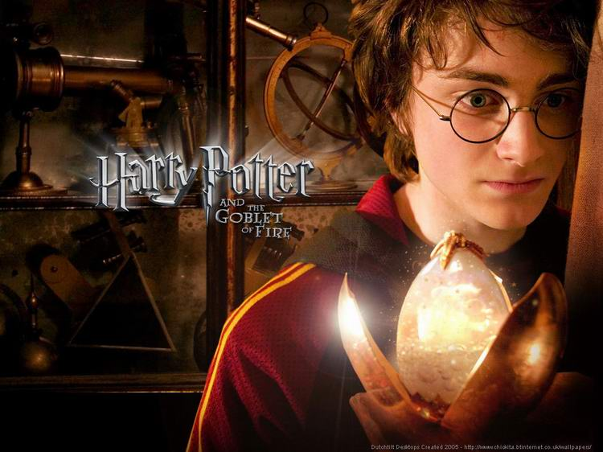
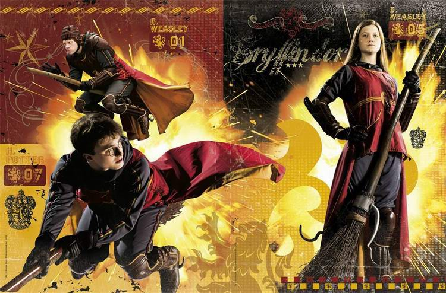
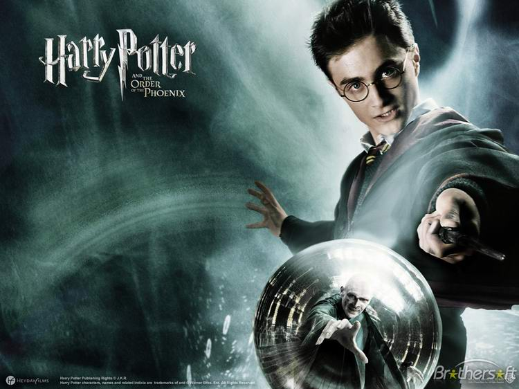
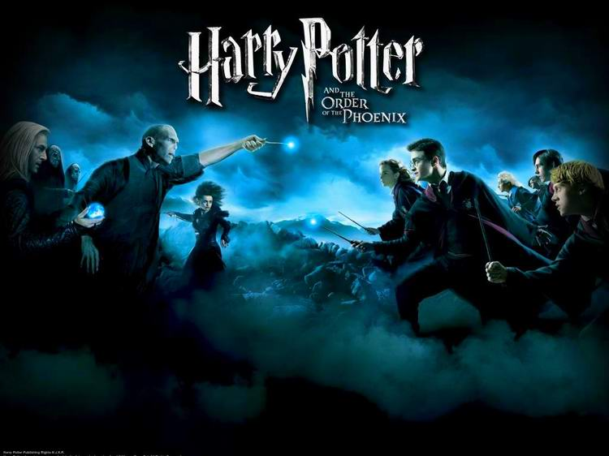
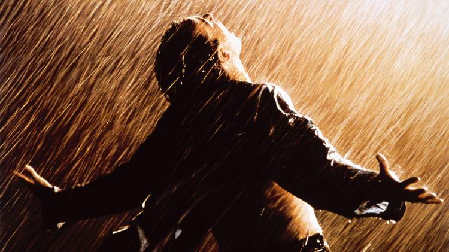
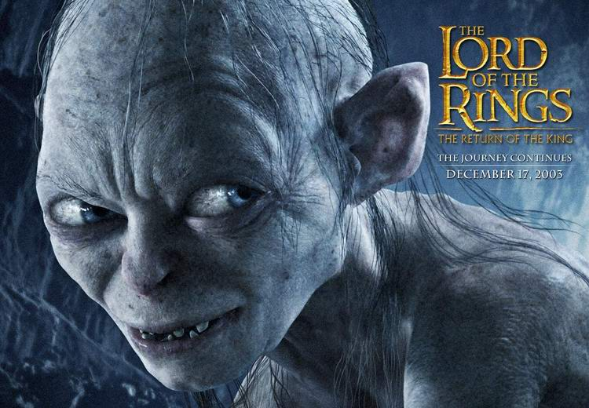
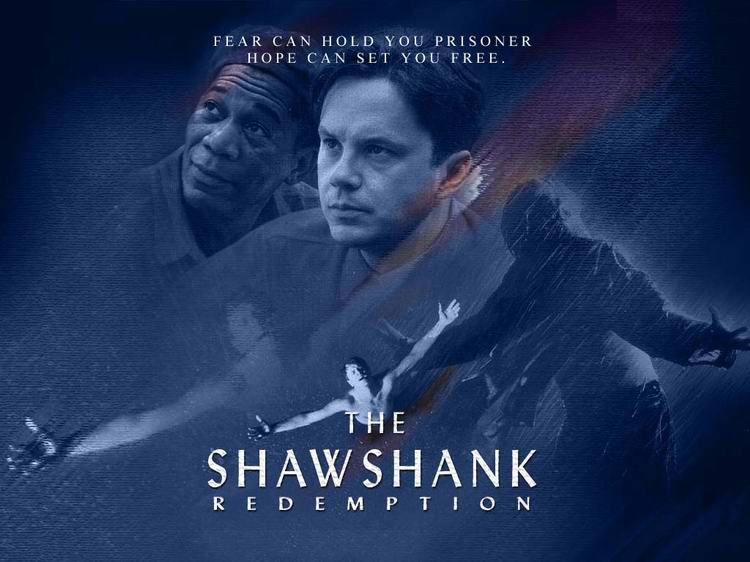

Смотреть или не смотреть...
Появление фильмов, претендующих на духовность нередко вызывает неоднозначную реакцию особенно в аудитории, ищущей духовности. Предлагаю вам мнение Ирины Галь - педагога и лектора со стажем.
Смотреть или не смотреть – вот в чём вопрос...
Автор: Ирина Галь /mirvnutrinas.ru/
Сегодня я хочу поднять одну из самых актуальных тем, вызывающих бурные дискуссии между верующими: разрешать или запрещать читать и смотреть детям (и не только детям) всемирно известные бестеллеры – «Гарри Потер», «Хроники Нарнии», Властелин колец» и т.п. Дискуссии вокруг этих произведений снова и снова возвращают нас к проблеме отношения верующих к литературе, кино, музыке.
Я думаю, что прежде всего для формирования правильного отношения к книге, фильму важно знать о личности автора, его идеях, жизненной философии, которые неразрывно связаны с идеями книг или фильмов. И эти идеи, даже не выраженные словами, подспудно или явно будут являться духовным фоном произведения, влияющим на людей.
Второй фактор в формировании правильного отношения–это плоды воздействия произведения на душу человека, на его эмоции, решения и поступки.
Хроники Нарнии
Когда я «открыла» для себя «Хроники Нарнии», я тут же нашла и прочитала все что могла об авторе, а также другие его произведения. «Хроники» я начала читать своим детям с шести лет. Искупительная жертва Мессии трогала мое сердце с новой силой, когда очередной раз я читала им о льве Аслане, его смерти и воскресении. Его царство, котрое вечно, его жертвенность, образы героев Нарнии, возбуждали стремление быть лучше, рождали сострадание к обманутым и слабым, желание помочь им, а не злиться и называть их тупыми и глупыми.
Мы перечитывали эту книгу и каждый раз получали новые откровения. Да, да откровения. Написано – «духовные обо всем судят духовно». Конечно же, в фильме личность режиссера и голливудский подход имели свое влияние, но не настолько, чтобы изменить мораль произведение и его духовнй фон. Я знакома с некотрыми людьми, которые во время просмотра
фильма в кинотеатре, в момент воскресения льва кричали «Алилуя!!!».
Кстати, все эти диковинные звери, человеко-звери может и вызывают смущение, но это не значит, что надо искать бесов во всех образах, аналогов которых мы не видим в физическом мире. Важно понять что и кто стоит за этими образами и символами. (Обратим внимание на видения и образы в Священном Писании!).
Гарри Поттер
«Гарри Поттер». Книга совершенно другого духовного содержания. Беря во внимание, что я ничего не знаю об авторе, попытаюсь кратко проанализировать само произведение и его воздействие на ребенка. Написано талантливо и захватывающе. Но ни книга, ни фильм, не проводят четкой границы между тьмой и светом, между дозволенным и запрещенным. Возбуждается желание проникнуть в мистический мир, иметь сверхъестественную власть и могущество для достижения своих целей. От этого совсем недалеко до проявления интереса к книгам типа «Как контролировать людей», «Мистика и могущество» и т.д и т.п. Добро и зло в «Гарри Поттере» действуют одними и теми же способами. Месть, ненависть, заклятия, проклятия, привороты (т.е. колдовство), являются мотивами, способами и средствами как «хороших» героев, так и «плохих». Другими словами, о мире света там нет и речи, просто тьма маскируется под свет. Этим и опасен фильм.

Гарри становится кумиром детей, он для них «положительный» герой, победитель «сами знаете кого». Я бы советовала родителям не разрешать большинству детей (подающимся влиянию, чувствительным) смотреть этот фильм, так как они обычно не имеют духовного опыта и не могут отделить съедобного от несъедобного. А если и разрешать, то высказывая свой взгляд на происходящие события.

Кстати, что касается запретов. Написано: «Наследник, доколе в детстве, ничем не отличается от раба, хотя и господин всего: он подчинен попечителям и домоправителям до срока, Отцом назначенным.» Галатам 4:1,2.
Закон - очень важная часть в жизни ребенка, и одна из главных целей закона - научить доверять и подчиняться родителям и в дальнейшем доверять Богу. Поэтому нужно уметь и запрещать, и использовать время закона чтобы вкладывать и обьяснять духовные истины. «Да будут слова сии, которые я заповедую тебе сегодня, в сердце твоем. И внушай их детям твоим, говори о них, сидя в доме твоем и идя дорогою, и ложась и вставая» - Второзаконие 6:6,7.

Икусство и СМИ черезвычайно сильно влияют на формирование души и образа жизни людей, в сильной степени воздействует на чувства и систему ценностей. Дьявол использут кино, театр, живопись, музыку, чтобы легализовать грех, открыто проповедовать греховный образ жизни как общепринятый и вполне естественный для современного человека. Это как яд, он отравляет души детей и влияет на их мышление и поведение. И не важно в каком количестве принят яд, рано или поздно он сделает свое дело.
Дети, постоянно смотрящие светские программы, фильмы, слушаюшие современные песни, воспринимают все эти образы как стереотипы поведения, кумиры для подражания.
Но ни мы, ни наши дети не можем выйти из общества, но мы можем научиться сами и научить детей делать правильно самоопределяться в жизни, а это невозможно сделать только запретами. Запреты должны сопровождаться обьяснениями, дискуссиями. Привить противоядие к плохому – это помочь ребенку построить настоящие взаимоотношения с Богом, сформировать духовный навык различения добра и зла.

На стадии, когда у ребенка не сформировано все это нужно проверять все передачи и фильмы, которые он смотрит, все книги, которые он читает, все картинки и игры, которые он смотрит в интернете. Иногда запрещая смотреть и слушать то, что отравляет его вы поможете ему справиться с соблазнами и не дадите «миру» повлиять на его мышление.
Читайте с ним Писание. Обсуждайте (не осуждайте!) поведение героев фильмов, слова, поступки, желания, сравнивая их со Словом, молитесь за ребёнка.
Только не навязывайте своего мнения, не нравоучайте, не раздражайте детей религиозными провозглашениями. Если ребенок интересуется фильмами, любит читать, слушать музыку – найдите ему действительно стоящие «вещи». И на примере этого покажите явную разницу влияния этих фильмов и книг на душу.

Например, фильм «Побег из Шоушенка» мы с детьми смотрели три раза. Нас очень вдохновил главный герой, который в тяжелых обстоятельствах в течении многих лет продолжал верить в успех и двигаться к своей цели. В подробностях мы обсуждали характер этого героя, находили в нем достойные черты.
В фильме «Игры разума» меня поразила сила настоящей любви, о которой написано в 1 Коринфянам 13 гл., и которая помогла главному герою выжить, устоять, победить и достигнуть успеха в жизни.
Властелин колец
А фильм «Властелин колец». Какое многообразие духовных образов и ситуаций! Фильм талантливого режиссера захватывает внимание на протяжении всего просмотра и не случайно жестокому миру тьмы противостоят самые маленькие обитатели «Средиземья», испытывающие и сильные искушения воспользоваться темной силой и серьезные испытания дружбы.

Очень сильно сделаны эпизоды с перевоплощением и раздвоением личности Горлума, с изгнанием темного волшебника из личности одного из царей. В фильме существует много символов и деталей, которые не всегда улавливаются с первого раза, но дают возможность снова и снова обращаться к нему, фиксировать нюансы, обсуждать действия и характеры героев.
О чем вы разговариваете со своим ребенком? Понимает ли он, что в духовном мире нет пустоты и всякому физическому явлению есть начало в духовном мире. А смотрите ли вы сами так на события своей жизни и процессы происходящие в обществе, в том числе в искусстве и СМИ? Сколько времени вы сами проводите у экранов телевизора, что вы смотрите и читаете? Какого рода информации вы даете приоритеты в вашей жизни?

В 1Кор.2:4-5 написано «И слово мое и проповедь моя не в убедительных словах человеческой мудрости, но в явлении духа и силы, чтобы вера ваша утверждалась не на мудрости человеческой, но на силе Божьей». Уча своих детей любить Бога и жить по Его слову важно, чтобы за нашими словами стояло явление Духа и Силы Божьей, иначе мы просто вырастим очередного фарисея.
Бог создал искусство для явления Свой славы и вдохнул в человека творческий дух. Он не взял нас из мира, но призвал нас принести в мир Его свет и вернуть искусству первоначальное предназначение. Ребенок, желающий слушать музыку, смотреть фильмы, читать, рисовать, ходить в музеи, театры – это замечательно. Наша задача – заложить в нем правильные основания – видеть все, что происходит, через призму Писания, духовно.
Нам важно научить его думать, размышлять, сравнивать, анализировать. Ответственность семьи и общины создать такую среду, в которой этот процесс в жизни ребенка строился в атмосфере истины, на непревзойденном авторитете Слова Божьего.